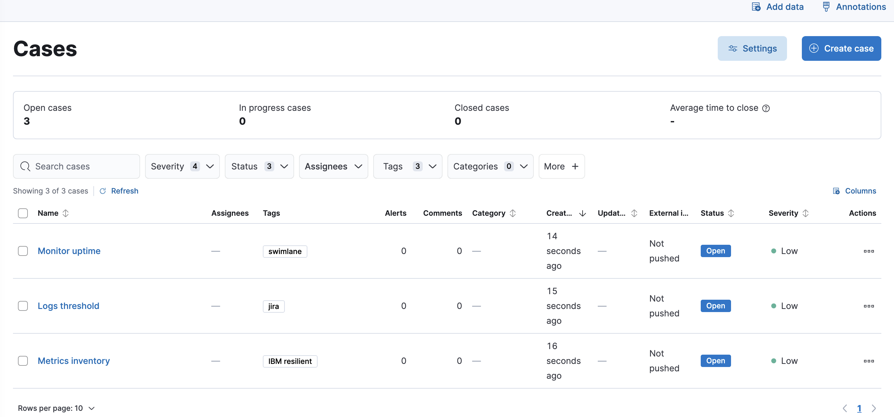

Cases
editCollect and share information about observability issues by creating a case. Cases allow you to track key investigation details, add assignees and tags to your cases, set their severity and status, and add alerts, comments, and visualizations. You can also send cases to third-party systems by configuring external connectors.
